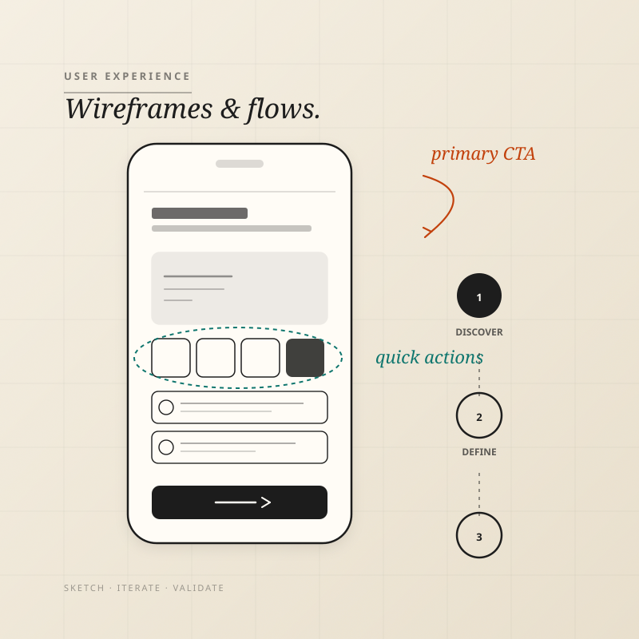
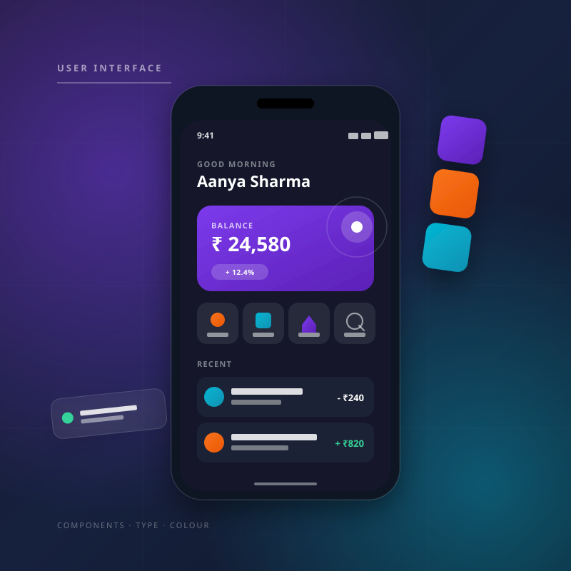
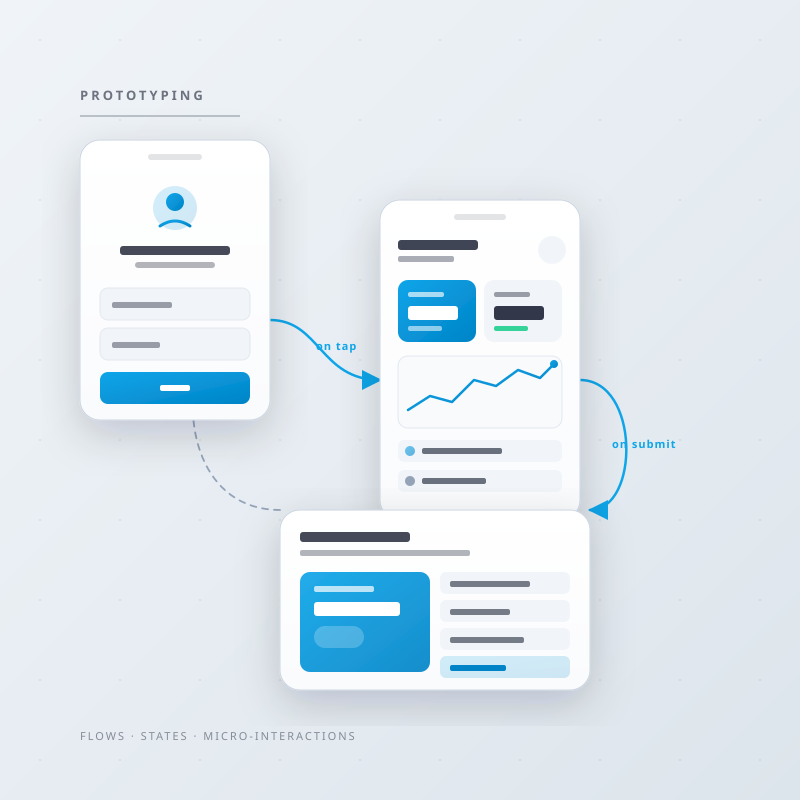
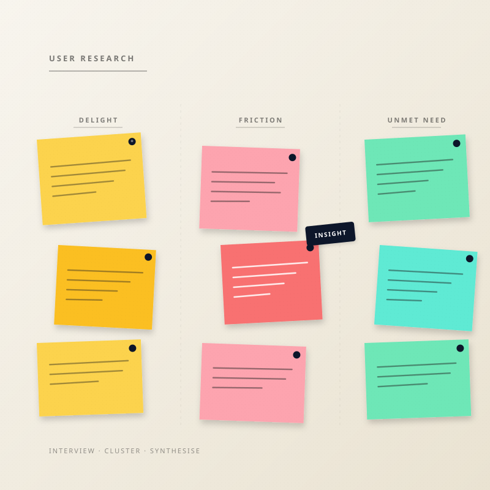
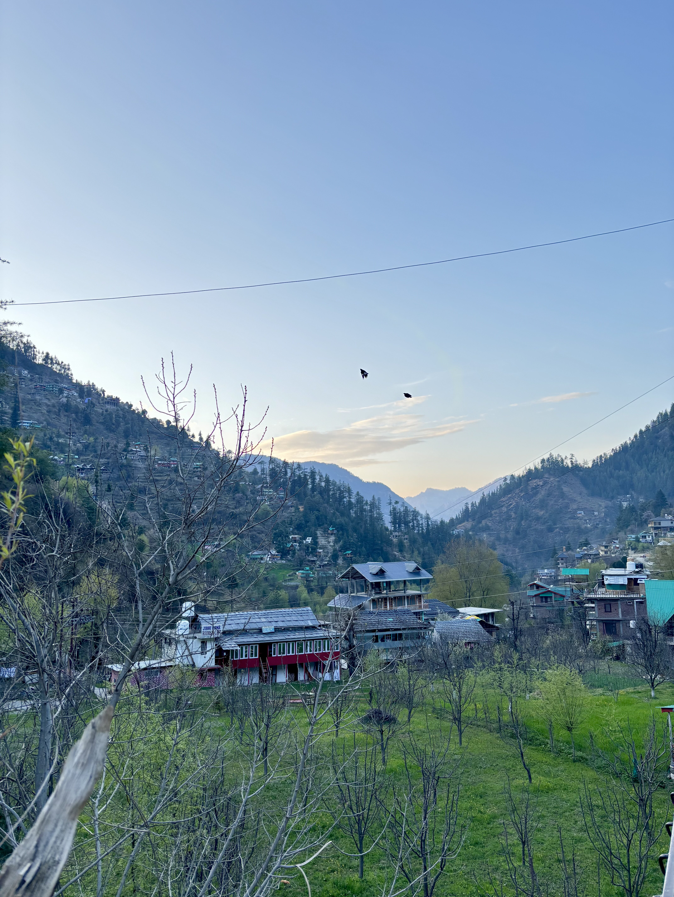

(Info)
(Info)
(Info)
(Info)
I design intuitive, minimal user experience with the mindset of a gamer and the curiosity of a traveler, always focused on flow, clarity and impact
View Work(Featured Project)
(The Journey So Far)
(My areas of focus)





